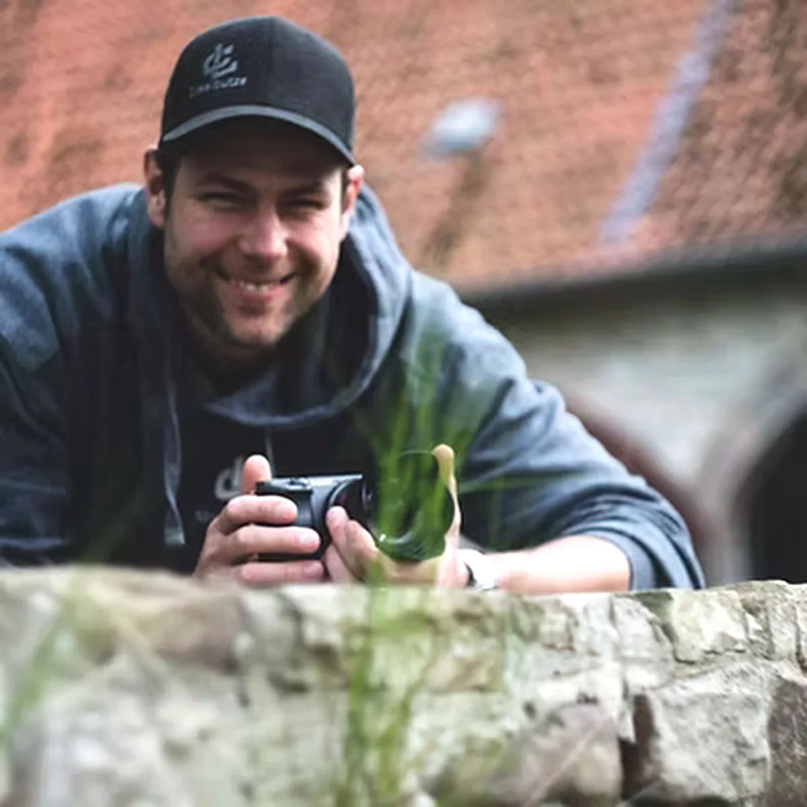

Zufriedenheit
Verborgene Interessen und Fähigkeiten aufdecken.
Apollon › Konvaleszenz
Wege in Bewegung
Wenn dein Körper dich hierher gerufen hat, bist du richtig.
„Behandle die Ursache, nicht die Wirkung.“
Dr. Edward Bach
Konvaleszenz schaut auf die Ursachen von Schmerzen, Problemen und dem, was sich in deinem Leben festgefahren anfühlt oder fehlt.
Unser Werkzeug ist der Blick auf deine Füße. Nicht als Methode, sondern als Zugang.
Deine Fußsohlen zeigen, wie dein Körper Belastungen verarbeitet, wo Spannung entsteht und wie dein ganz persönlicher Zustand aussieht. So individuell, wie du es bist.
Deine Füße lügen nicht.
Sie zeigen deinen körperlichen, geistigen, seelischen Zustand, nicht ein Modell.
Die Fußlesung ist ein erster klarer Blick auf deinen aktuellen Zustand. Sie macht sichtbar, wo Druck entstanden ist, was dich innerlich blockiert und warum dein Körper genau so reagiert.
Ohne Bewertung. Ohne Einordnung in richtig oder falsch. Sondern so, wie es sich bei dir zeigt. Nicht allgemein, nicht vergleichend, sondern bezogen auf dich.
Du erlebst hier zum ersten Mal Klarheit statt Vermutungen. Die Fußlesung ist kein Versprechen auf Lösung. Sie ist eine Einladung zur Wahrheit, deiner Wahrheit, und damit der Anfang von Veränderung. Nicht, weil etwas kaputt ist, sondern weil es zu lange getragen, verdrängt oder aus falschen Entscheidungen heraus zurückgestellt wurde.
Es richtet sich an Menschen, die bereit sind, Verantwortung für sich zu übernehmen und ihren Zustand nicht delegieren, sondern verstehen wollen. Wer eine schnelle Lösung sucht, ist hier nicht richtig. Wer Klarheit sucht, findet hier einen Anfang.
Manchmal zeigt sich, dass es nicht um ein einzelnes Thema geht, sondern um ein ganzes Gefüge aus Verantwortung, Druck und Erwartungen. Dann beginnt das Mentoring.
Keine Therapie. Kein Programm. Sondern eine Begleitung, die Ordnung zurückbringt, im Denken, im Körper und im Leben. Nicht schneller. Sondern tragfähiger.
Wichtig
Konvaleszenz ersetzt keine medizinische oder therapeutische Behandlung und gibt keine Heilversprechen.
Konvaleszenz ist ein Raum für Menschen, die verstehen wollen, warum ihr Körper reagiert, statt ihn weiter zu bekämpfen.
Ich stelle keine Diagnosen. Ich ordne ein. Damit du in deinem Tempo, in eigener Verantwortung, klarere Entscheidungen treffen kannst.
Deine Vorteile
Verborgene Interessen und Fähigkeiten aufdecken.
Gezielt können Ernährungsumstellungen ausgesprochen werden.
Neue Ausrichtung durch Leben deines Seelenplans.
Selbstheilung geschieht durch Konfliktlösung. Keine sogenannte Krankheit kommt von außen. Beginne mit der Innenschau und wachse in deine eigenen Schuhe. Gehe den ersten Schritt und nimm Kontakt auf, wir helfen dir, zu transformieren, zu dem Menschen, der du sein sollst.
BeziehungenFührungKrankheitEinsamkeitGesundheit
Wenn du bereit bist, dich für dich zu öffnen und in die Erfüllung all deiner Träume zu gelangen, dann bist du hier richtig.
Projektleitung von Konvaleszenz
Ich arbeite mit dir, weil ich weiß, wie leicht man sich selbst verliert, während man funktioniert, trägt, durchhält.
Vielleicht kennst du das: Du machst alles richtig, und trotzdem fühlt sich etwas nicht stimmig an.
Mich treibt die Erfahrung, dass dein Körper oft früher weiß, was aus dem Gleichgewicht geraten ist, als dein Kopf es zulässt. Er speichert, was du übergehst. Er hält fest, was du lange getragen hast.
Ich habe gelernt, diese Sprache zu verstehen. Still, ohne Bewertung, ohne Zielvorgaben. Besonders dort, wo sie sichtbar wird: an deinen Füßen.
Ich liebe diese Arbeit, weil ich immer wieder sehe, wie viel Entlastung entsteht, wenn du erkennst, warum dein Körper reagiert und was du nicht länger ausgleichen musst.
Bei Konvaleszenz geht es nicht darum, dich zu verändern. Es geht darum, dass du dich wieder wahrnimmst. Klar. Erdverbunden. In deinem Tempo.
Ich begleite dich, damit du verstehst, was dich belastet, und damit dein System wieder tragen kann, ohne ständig gegen sich selbst zu arbeiten.
Erfahrungsberichte
Mit den liebevollen Empfehlungen durch die Fußlesung konnte ich meine Lebensenergie zurückgewinnen.
Der Verein inspiriert Menschen mit Hilfe des Werkzeugs „Füße lesen“ ins Handeln zu kommen.

Auf der stetigen Suche nach der Selbstoptimierung und Ursachenforschung hat mich die Erkenntnis durch das Lesen weitergebracht mit der mir bis dato unbekannten Technik „Füße lesen“.
Mir wurde geholfen, meine Leidenschaft zur Berufung zu machen. Meine Leidenschaft ist die Fliegerei. Seit meinem sechzehnten Lebensjahr sitze ich hinter dem Steuerknüppel. Damals begann ich meine Flugausbildung im Segelflugzeug. Erst mit 18 begann ich, Motorflugzeuge zu fliegen. Aus gesundheitlichen Gründen musste ich meine Pläne, eine Karriere als Berufspilot, aufgeben. Da brach eine Welt in mir zusammen, denn mein Traum ließ sich nicht mehr realisieren. So geriet der Wunsch, die Fliegerei beruflich zunutze zu machen, in den Hintergrund. Marion Bernard begutachtete meine Fußsohlen. Dabei kam heraus, dass ich beruflich einen völlig falschen Weg eingeschlagen habe. In vielen Gesprächen wuchs eine neue Idee! Es geht darum, Menschen die Flugangst zu nehmen. Wir haben ein erfolgreiches Konzept entwickelt. Marion Bernard berät mich bis heute. Ihre Erfahrung, ihr Humor, ihre Geradlinigkeit und Bestimmtheit haben mir meine Trägheit ausgetrieben. Ich kann Marion Bernard nur weiterempfehlen. Ihre Empathie und Vertrautheit schaffen eine Atmosphäre, sich zu öffnen, um eine Persönlichkeitsweiterempfehlung zu fördern.
Wenn du spürst, dass dein Körper dich nicht quält, sondern auf etwas Wesentliches hinweist, ist die Fußlesung ein ruhiger, klärender Einstieg.
Konvaleszenz ist ein Projekt des Wirtschaftsvereins Apollon, Prinz-Eugen-Straße 68, 1040 Wien.
Wo wir sonst noch sind